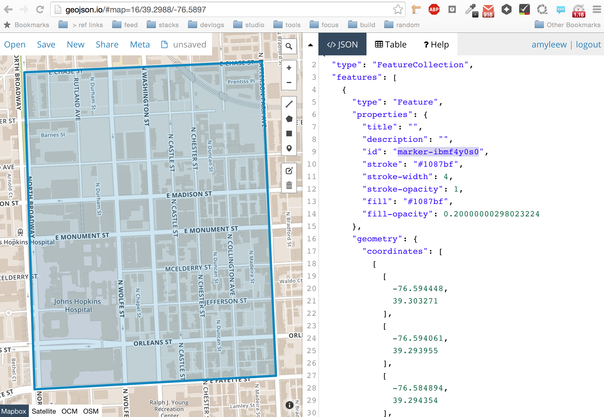

hi! i'm @amyleew
designer and navigator @mapbox
mapbox is: platform to design & build maps
 design
design build
buildmapping your neighborhood
baltimore natives?
i'm from small village called sardinia, ohio
let's talk about mapping.
 internship
internshiplots of research and custom data
 clueless
cluelessmaps are hard

maps are hard

map is science

maps are everything

we are always mapping
key to any map project:
- know the place
- gather data
- simplify toolkit
- tell the story
know the place:
- lat / long
- center point
- boundaries
 determine area
determine areagather data:
- format: geojson
- geometry types: point, line, polygon
 find source(s)
find source(s)starter styles in Editor
geojson.io
host MAP on Mapbox.com
 mobile
mobile Mapbox.js
Mapbox.js guides for everything
guides for everything
final project
you now know more than i did.
make me proud!
thanks. questions?
@amyleew designer @mapbox